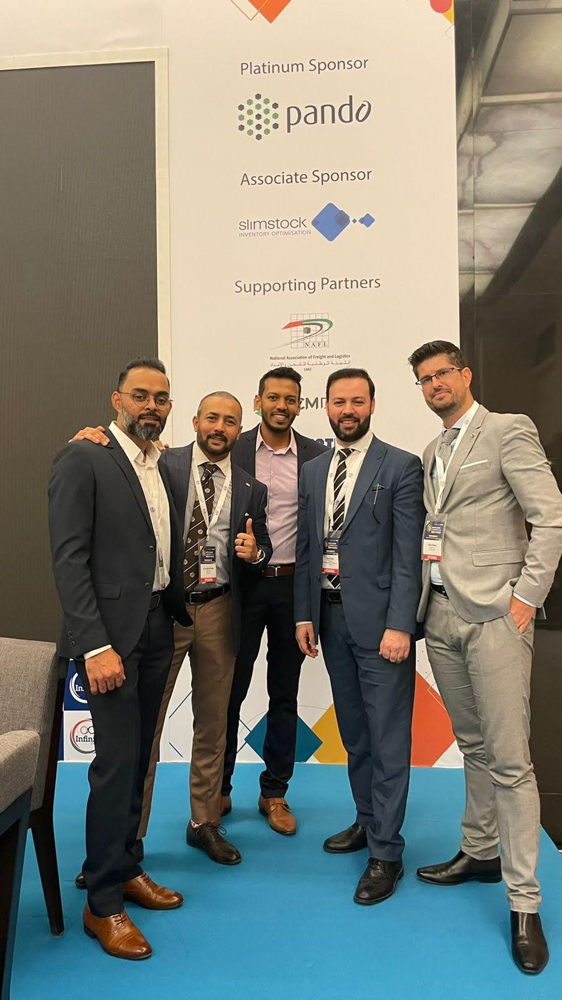

Chapter Five
Governance as Runway
The $80 Million Portfolio
Audio only"Governance isn't red tape. It's the runway."
The moment that crystallized my governance philosophy came during a particularly tense supplier audit in the Gulf. A procurement decision worth several million dollars was on the table, and the pressure to move fast — to skip the compliance review, to shortcut the approval chain — was immense. The client wanted speed. The supplier wanted closure. My team wanted to deliver.
I held the line. Not because I was rigid, but because I had seen what happens when governance is treated as optional. I had watched organizations move fast and break things — and then spend years cleaning up the wreckage. The audit continued. The compliance review was completed. And what we found during that review saved the client from a supplier relationship that would have collapsed within twelve months, taking millions in sunk costs with it.
Redefining Governance
Most organizations view governance as friction. It is the set of rules, reviews, and approvals that slow down execution. In this framing, governance is the enemy of agility. My experience tells a different story.
Words on the work
I was consistently impressed by his strong knowledge of procurement processes and his structured, consultative approach. He demonstrated a solid understanding of sourcing strategies, compliance, and process optimization.
Governance, when designed correctly, is not a brake. It is a runway. It is the structured preparation that allows you to accelerate safely. A pilot does not skip the pre-flight checklist because they are in a hurry. The checklist is what makes safe speed possible.
Over the course of my career, this philosophy produced measurable results: an $80 million procurement portfolio managed with zero compliance breaches. Not because we were slow. In fact, our deployment speed was markedly faster than the industry baseline. We were faster because we had done the governance work upfront. There were no surprises, no mid-project compliance crises, no emergency reviews that derailed timelines.

The Competitive Advantage of Trust
What surprised me — and what I believe still surprises many leaders — is that governance became a competitive advantage. Clients did not choose us despite our compliance rigour. They chose us because of it. In a market where vendor due diligence failures were making headlines, our track record became a differentiator. Governance was not a cost. It was a client acquisition strategy.
The lesson extends beyond procurement. Every function in an organization faces the same tension between speed and rigour. The organizations that resolve this tension — that build governance into the foundation rather than bolting it on as an afterthought — are the ones that sustain performance over time.
Governance as Accelerator · Listen — From Exile to Transformation · Prologue — The Night Everything Changed · Appendix · The Pyramid Operating System